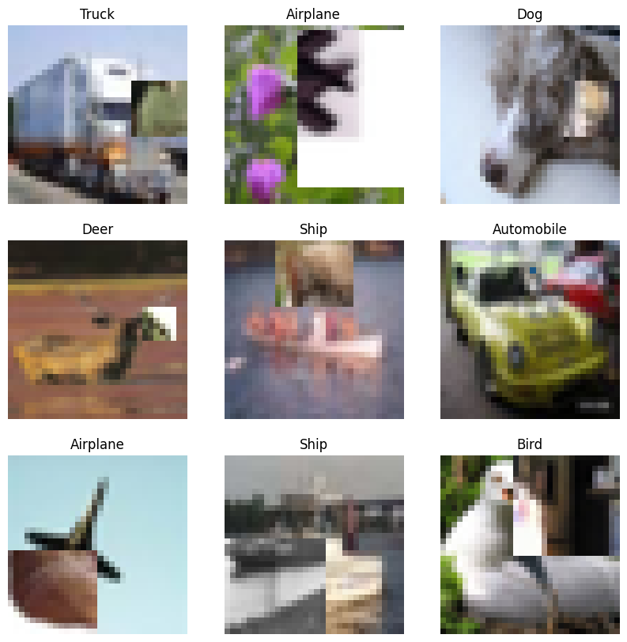

CutMix data augmentation for image classification
Author: Sayan Nath
Date created: 2021/06/08
Last modified: 2023/11/14
Description: Data augmentation with CutMix for image classification on CIFAR-10.

Introduction
CutMix is a data augmentation technique that addresses the issue of information loss and inefficiency present in regional dropout strategies. Instead of removing pixels and filling them with black or grey pixels or Gaussian noise, you replace the removed regions with a patch from another image, while the ground truth labels are mixed proportionally to the number of pixels of combined images. CutMix was proposed in CutMix: Regularization Strategy to Train Strong Classifiers with Localizable Features (Yun et al., 2019)
It's implemented via the following formulas:

where M is the binary mask which indicates the cutout and the fill-in
regions from the two randomly drawn images and λ (in [0, 1]) is drawn from a
Beta(α, α) distribution
The coordinates of bounding boxes are:

which indicates the cutout and fill-in regions in case of the images. The bounding box sampling is represented by:

where rx, ry are randomly drawn from a uniform distribution with upper bound.
Setup
import numpy as np
import keras
import matplotlib.pyplot as plt
from keras import layers
# TF imports related to tf.data preprocessing
from tensorflow import clip_by_value
from tensorflow import data as tf_data
from tensorflow import image as tf_image
from tensorflow import random as tf_random
keras.utils.set_random_seed(42)
Load the CIFAR-10 dataset
In this example, we will use the CIFAR-10 image classification dataset.
(x_train, y_train), (x_test, y_test) = keras.datasets.cifar10.load_data()
y_train = keras.utils.to_categorical(y_train, num_classes=10)
y_test = keras.utils.to_categorical(y_test, num_classes=10)
print(x_train.shape)
print(y_train.shape)
print(x_test.shape)
print(y_test.shape)
class_names = [
"Airplane",
"Automobile",
"Bird",
"Cat",
"Deer",
"Dog",
"Frog",
"Horse",
"Ship",
"Truck",
]
(50000, 32, 32, 3)
(50000, 10)
(10000, 32, 32, 3)
(10000, 10)
Define hyperparameters
AUTO = tf_data.AUTOTUNE
BATCH_SIZE = 32
IMG_SIZE = 32
Define the image preprocessing function
def preprocess_image(image, label):
image = tf_image.resize(image, (IMG_SIZE, IMG_SIZE))
image = tf_image.convert_image_dtype(image, "float32") / 255.0
label = keras.ops.cast(label, dtype="float32")
return image, label
Convert the data into TensorFlow Dataset objects
train_ds_one = (
tf_data.Dataset.from_tensor_slices((x_train, y_train))
.shuffle(1024)
.map(preprocess_image, num_parallel_calls=AUTO)
)
train_ds_two = (
tf_data.Dataset.from_tensor_slices((x_train, y_train))
.shuffle(1024)
.map(preprocess_image, num_parallel_calls=AUTO)
)
train_ds_simple = tf_data.Dataset.from_tensor_slices((x_train, y_train))
test_ds = tf_data.Dataset.from_tensor_slices((x_test, y_test))
train_ds_simple = (
train_ds_simple.map(preprocess_image, num_parallel_calls=AUTO)
.batch(BATCH_SIZE)
.prefetch(AUTO)
)
# Combine two shuffled datasets from the same training data.
train_ds = tf_data.Dataset.zip((train_ds_one, train_ds_two))
test_ds = (
test_ds.map(preprocess_image, num_parallel_calls=AUTO)
.batch(BATCH_SIZE)
.prefetch(AUTO)
)
Define the CutMix data augmentation function
The CutMix function takes two image and label pairs to perform the augmentation.
It samples λ(l) from the Beta distribution
and returns a bounding box from get_box function. We then crop the second image (image2)
and pad this image in the final padded image at the same location.
def sample_beta_distribution(size, concentration_0=0.2, concentration_1=0.2):
gamma_1_sample = tf_random.gamma(shape=[size], alpha=concentration_1)
gamma_2_sample = tf_random.gamma(shape=[size], alpha=concentration_0)
return gamma_1_sample / (gamma_1_sample + gamma_2_sample)
def get_box(lambda_value):
cut_rat = keras.ops.sqrt(1.0 - lambda_value)
cut_w = IMG_SIZE * cut_rat # rw
cut_w = keras.ops.cast(cut_w, "int32")
cut_h = IMG_SIZE * cut_rat # rh
cut_h = keras.ops.cast(cut_h, "int32")
cut_x = keras.random.uniform((1,), minval=0, maxval=IMG_SIZE) # rx
cut_x = keras.ops.cast(cut_x, "int32")
cut_y = keras.random.uniform((1,), minval=0, maxval=IMG_SIZE) # ry
cut_y = keras.ops.cast(cut_y, "int32")
boundaryx1 = clip_by_value(cut_x[0] - cut_w // 2, 0, IMG_SIZE)
boundaryy1 = clip_by_value(cut_y[0] - cut_h // 2, 0, IMG_SIZE)
bbx2 = clip_by_value(cut_x[0] + cut_w // 2, 0, IMG_SIZE)
bby2 = clip_by_value(cut_y[0] + cut_h // 2, 0, IMG_SIZE)
target_h = bby2 - boundaryy1
if target_h == 0:
target_h += 1
target_w = bbx2 - boundaryx1
if target_w == 0:
target_w += 1
return boundaryx1, boundaryy1, target_h, target_w
def cutmix(train_ds_one, train_ds_two):
(image1, label1), (image2, label2) = train_ds_one, train_ds_two
alpha = [0.25]
beta = [0.25]
# Get a sample from the Beta distribution
lambda_value = sample_beta_distribution(1, alpha, beta)
# Define Lambda
lambda_value = lambda_value[0][0]
# Get the bounding box offsets, heights and widths
boundaryx1, boundaryy1, target_h, target_w = get_box(lambda_value)
# Get a patch from the second image (`image2`)
crop2 = tf_image.crop_to_bounding_box(
image2, boundaryy1, boundaryx1, target_h, target_w
)
# Pad the `image2` patch (`crop2`) with the same offset
image2 = tf_image.pad_to_bounding_box(
crop2, boundaryy1, boundaryx1, IMG_SIZE, IMG_SIZE
)
# Get a patch from the first image (`image1`)
crop1 = tf_image.crop_to_bounding_box(
image1, boundaryy1, boundaryx1, target_h, target_w
)
# Pad the `image1` patch (`crop1`) with the same offset
img1 = tf_image.pad_to_bounding_box(
crop1, boundaryy1, boundaryx1, IMG_SIZE, IMG_SIZE
)
# Modify the first image by subtracting the patch from `image1`
# (before applying the `image2` patch)
image1 = image1 - img1
# Add the modified `image1` and `image2` together to get the CutMix image
image = image1 + image2
# Adjust Lambda in accordance to the pixel ration
lambda_value = 1 - (target_w * target_h) / (IMG_SIZE * IMG_SIZE)
lambda_value = keras.ops.cast(lambda_value, "float32")
# Combine the labels of both images
label = lambda_value * label1 + (1 - lambda_value) * label2
return image, label
Note: we are combining two images to create a single one.
Visualize the new dataset after applying the CutMix augmentation
# Create the new dataset using our `cutmix` utility
train_ds_cmu = (
train_ds.shuffle(1024)
.map(cutmix, num_parallel_calls=AUTO)
.batch(BATCH_SIZE)
.prefetch(AUTO)
)
# Let's preview 9 samples from the dataset
image_batch, label_batch = next(iter(train_ds_cmu))
plt.figure(figsize=(10, 10))
for i in range(9):
ax = plt.subplot(3, 3, i + 1)
plt.title(class_names[np.argmax(label_batch[i])])
plt.imshow(image_batch[i])
plt.axis("off")

Define a ResNet-20 model
def resnet_layer(
inputs,
num_filters=16,
kernel_size=3,
strides=1,
activation="relu",
batch_normalization=True,
conv_first=True,
):
conv = layers.Conv2D(
num_filters,
kernel_size=kernel_size,
strides=strides,
padding="same",
kernel_initializer="he_normal",
kernel_regularizer=keras.regularizers.L2(1e-4),
)
x = inputs
if conv_first:
x = conv(x)
if batch_normalization:
x = layers.BatchNormalization()(x)
if activation is not None:
x = layers.Activation(activation)(x)
else:
if batch_normalization:
x = layers.BatchNormalization()(x)
if activation is not None:
x = layers.Activation(activation)(x)
x = conv(x)
return x
def resnet_v20(input_shape, depth, num_classes=10):
if (depth - 2) % 6 != 0:
raise ValueError("depth should be 6n+2 (eg 20, 32, 44 in [a])")
# Start model definition.
num_filters = 16
num_res_blocks = int((depth - 2) / 6)
inputs = layers.Input(shape=input_shape)
x = resnet_layer(inputs=inputs)
# Instantiate the stack of residual units
for stack in range(3):
for res_block in range(num_res_blocks):
strides = 1
if stack > 0 and res_block == 0: # first layer but not first stack
strides = 2 # downsample
y = resnet_layer(inputs=x, num_filters=num_filters, strides=strides)
y = resnet_layer(inputs=y, num_filters=num_filters, activation=None)
if stack > 0 and res_block == 0: # first layer but not first stack
# linear projection residual shortcut connection to match
# changed dims
x = resnet_layer(
inputs=x,
num_filters=num_filters,
kernel_size=1,
strides=strides,
activation=None,
batch_normalization=False,
)
x = layers.add([x, y])
x = layers.Activation("relu")(x)
num_filters *= 2
# Add classifier on top.
# v1 does not use BN after last shortcut connection-ReLU
x = layers.AveragePooling2D(pool_size=8)(x)
y = layers.Flatten()(x)
outputs = layers.Dense(
num_classes, activation="softmax", kernel_initializer="he_normal"
)(y)
# Instantiate model.
model = keras.Model(inputs=inputs, outputs=outputs)
return model
def training_model():
return resnet_v20((32, 32, 3), 20)
initial_model = training_model()
initial_model.save_weights("initial_weights.weights.h5")
Train the model with the dataset augmented by CutMix
model = training_model()
model.load_weights("initial_weights.weights.h5")
model.compile(loss="categorical_crossentropy", optimizer="adam", metrics=["accuracy"])
model.fit(train_ds_cmu, validation_data=test_ds, epochs=15)
test_loss, test_accuracy = model.evaluate(test_ds)
print("Test accuracy: {:.2f}%".format(test_accuracy * 100))
Epoch 1/15
10/1563 [37m━━━━━━━━━━━━━━━━━━━━ 19s 13ms/step - accuracy: 0.0795 - loss: 5.3035
WARNING: All log messages before absl::InitializeLog() is called are written to STDERR
I0000 00:00:1699988196.560261 362411 device_compiler.h:187] Compiled cluster using XLA! This line is logged at most once for the lifetime of the process.
1563/1563 ━━━━━━━━━━━━━━━━━━━━ 64s 27ms/step - accuracy: 0.3148 - loss: 2.1918 - val_accuracy: 0.4067 - val_loss: 1.8339
Epoch 2/15
1563/1563 ━━━━━━━━━━━━━━━━━━━━ 27s 17ms/step - accuracy: 0.4295 - loss: 1.9021 - val_accuracy: 0.5516 - val_loss: 1.4744
Epoch 3/15
1563/1563 ━━━━━━━━━━━━━━━━━━━━ 28s 18ms/step - accuracy: 0.4883 - loss: 1.8076 - val_accuracy: 0.5305 - val_loss: 1.5067
Epoch 4/15
1563/1563 ━━━━━━━━━━━━━━━━━━━━ 27s 17ms/step - accuracy: 0.5243 - loss: 1.7342 - val_accuracy: 0.6303 - val_loss: 1.2822
Epoch 5/15
1563/1563 ━━━━━━━━━━━━━━━━━━━━ 27s 17ms/step - accuracy: 0.5574 - loss: 1.6614 - val_accuracy: 0.5370 - val_loss: 1.5912
Epoch 6/15
1563/1563 ━━━━━━━━━━━━━━━━━━━━ 27s 17ms/step - accuracy: 0.5832 - loss: 1.6167 - val_accuracy: 0.6254 - val_loss: 1.3116
Epoch 7/15
1563/1563 ━━━━━━━━━━━━━━━━━━━━ 26s 17ms/step - accuracy: 0.6045 - loss: 1.5738 - val_accuracy: 0.6101 - val_loss: 1.3408
Epoch 8/15
1563/1563 ━━━━━━━━━━━━━━━━━━━━ 28s 18ms/step - accuracy: 0.6170 - loss: 1.5493 - val_accuracy: 0.6209 - val_loss: 1.2923
Epoch 9/15
1563/1563 ━━━━━━━━━━━━━━━━━━━━ 29s 18ms/step - accuracy: 0.6292 - loss: 1.5299 - val_accuracy: 0.6290 - val_loss: 1.2813
Epoch 10/15
1563/1563 ━━━━━━━━━━━━━━━━━━━━ 28s 18ms/step - accuracy: 0.6394 - loss: 1.5110 - val_accuracy: 0.7234 - val_loss: 1.0608
Epoch 11/15
1563/1563 ━━━━━━━━━━━━━━━━━━━━ 26s 17ms/step - accuracy: 0.6467 - loss: 1.4915 - val_accuracy: 0.7498 - val_loss: 0.9854
Epoch 12/15
1563/1563 ━━━━━━━━━━━━━━━━━━━━ 28s 18ms/step - accuracy: 0.6559 - loss: 1.4785 - val_accuracy: 0.6481 - val_loss: 1.2410
Epoch 13/15
1563/1563 ━━━━━━━━━━━━━━━━━━━━ 26s 17ms/step - accuracy: 0.6596 - loss: 1.4656 - val_accuracy: 0.7551 - val_loss: 0.9784
Epoch 14/15
1563/1563 ━━━━━━━━━━━━━━━━━━━━ 27s 17ms/step - accuracy: 0.6577 - loss: 1.4637 - val_accuracy: 0.6822 - val_loss: 1.1703
Epoch 15/15
1563/1563 ━━━━━━━━━━━━━━━━━━━━ 26s 17ms/step - accuracy: 0.6702 - loss: 1.4445 - val_accuracy: 0.7108 - val_loss: 1.0805
313/313 ━━━━━━━━━━━━━━━━━━━━ 1s 3ms/step - accuracy: 0.7140 - loss: 1.0766
Test accuracy: 71.08%
Train the model using the original non-augmented dataset
model = training_model()
model.load_weights("initial_weights.weights.h5")
model.compile(loss="categorical_crossentropy", optimizer="adam", metrics=["accuracy"])
model.fit(train_ds_simple, validation_data=test_ds, epochs=15)
test_loss, test_accuracy = model.evaluate(test_ds)
print("Test accuracy: {:.2f}%".format(test_accuracy * 100))
Epoch 1/15
1563/1563 ━━━━━━━━━━━━━━━━━━━━ 41s 15ms/step - accuracy: 0.3943 - loss: 1.8736 - val_accuracy: 0.5359 - val_loss: 1.4376
Epoch 2/15
1563/1563 ━━━━━━━━━━━━━━━━━━━━ 11s 7ms/step - accuracy: 0.6160 - loss: 1.2407 - val_accuracy: 0.5887 - val_loss: 1.4254
Epoch 3/15
1563/1563 ━━━━━━━━━━━━━━━━━━━━ 11s 7ms/step - accuracy: 0.6927 - loss: 1.0448 - val_accuracy: 0.6102 - val_loss: 1.4850
Epoch 4/15
1563/1563 ━━━━━━━━━━━━━━━━━━━━ 12s 7ms/step - accuracy: 0.7411 - loss: 0.9222 - val_accuracy: 0.6262 - val_loss: 1.3898
Epoch 5/15
1563/1563 ━━━━━━━━━━━━━━━━━━━━ 13s 8ms/step - accuracy: 0.7711 - loss: 0.8439 - val_accuracy: 0.6283 - val_loss: 1.3425
Epoch 6/15
1563/1563 ━━━━━━━━━━━━━━━━━━━━ 12s 8ms/step - accuracy: 0.7983 - loss: 0.7886 - val_accuracy: 0.2460 - val_loss: 5.6869
Epoch 7/15
1563/1563 ━━━━━━━━━━━━━━━━━━━━ 11s 7ms/step - accuracy: 0.8168 - loss: 0.7490 - val_accuracy: 0.1954 - val_loss: 21.7670
Epoch 8/15
1563/1563 ━━━━━━━━━━━━━━━━━━━━ 11s 7ms/step - accuracy: 0.8113 - loss: 0.7779 - val_accuracy: 0.1027 - val_loss: 36.3144
Epoch 9/15
1563/1563 ━━━━━━━━━━━━━━━━━━━━ 11s 7ms/step - accuracy: 0.6592 - loss: 1.4179 - val_accuracy: 0.1025 - val_loss: 40.0770
Epoch 10/15
1563/1563 ━━━━━━━━━━━━━━━━━━━━ 12s 8ms/step - accuracy: 0.5611 - loss: 1.9856 - val_accuracy: 0.1699 - val_loss: 40.6308
Epoch 11/15
1563/1563 ━━━━━━━━━━━━━━━━━━━━ 13s 8ms/step - accuracy: 0.6076 - loss: 1.7795 - val_accuracy: 0.1003 - val_loss: 63.4775
Epoch 12/15
1563/1563 ━━━━━━━━━━━━━━━━━━━━ 12s 7ms/step - accuracy: 0.6175 - loss: 1.8077 - val_accuracy: 0.1099 - val_loss: 21.9148
Epoch 13/15
1563/1563 ━━━━━━━━━━━━━━━━━━━━ 12s 7ms/step - accuracy: 0.6468 - loss: 1.6702 - val_accuracy: 0.1576 - val_loss: 72.7290
Epoch 14/15
1563/1563 ━━━━━━━━━━━━━━━━━━━━ 12s 7ms/step - accuracy: 0.6437 - loss: 1.7858 - val_accuracy: 0.1000 - val_loss: 64.9249
Epoch 15/15
1563/1563 ━━━━━━━━━━━━━━━━━━━━ 13s 8ms/step - accuracy: 0.6587 - loss: 1.7587 - val_accuracy: 0.1000 - val_loss: 138.8463
313/313 ━━━━━━━━━━━━━━━━━━━━ 1s 3ms/step - accuracy: 0.0988 - loss: 139.3117
Test accuracy: 10.00%
Notes
In this example, we trained our model for 15 epochs. In our experiment, the model with CutMix achieves a better accuracy on the CIFAR-10 dataset (77.34% in our experiment) compared to the model that doesn't use the augmentation (66.90%). You may notice it takes less time to train the model with the CutMix augmentation.
You can experiment further with the CutMix technique by following the original paper.